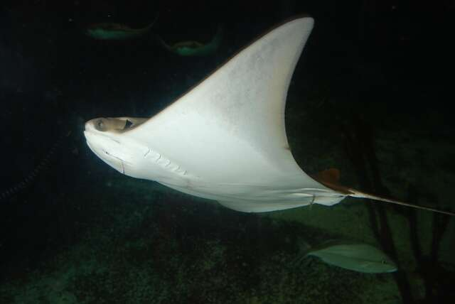

鳐、魟、鲼到底怎么区分？
鳐（skate）、魟（stingray）和鲼（eagle ray）都属于软骨鱼中的板鳃类，身体扁平、外形相似，常被统称为“魟鱼”或“魔鬼鱼”。但只要抓住 体型、尾巴和背鳍 这三个关键，就能快速把它们分开。
🟤 鳐（Skate）
- 身体多呈菱形或心形，边缘较尖。
- 尾巴较粗、多肉，没有毒刺；尾部靠近末端通常有两个小小的背鳍。
- 背部常有棘刺（小硬刺）用于防御。
- 繁殖方式为卵生——会产下俗称“美人鱼钱包”的方形卵鞘。
- 多栖息在海底沙地上。
🔵 魟（Stingray）
- 身体呈圆盘状或圆润的菱形，边缘平滑。
- 尾巴细长如鞭，通常带一根有毒的尾刺；背鳍退化或缺失。
- 繁殖方式为卵胎生——直接产下幼体。
- 常伏在海底、把自己埋进沙里，靠波动胸鳍缓慢移动。
⚫ 鲼（Eagle Ray / Manta）
- 头部与身体分界明显，口两侧长有“头鳍（角状的头叶）”，鲼类吻部尖、蝠鲼（manta）的头鳍卷曲如角。
- 胸鳍尖长像鸟的翅膀，游动时如同在水中“飞行”，而不是趴在海底。
- 尾巴细长，多数鲼类尾部也带一根毒刺。
- 注意区分蝠鲼（manta）：它属于另一科（Mobulidae），体型巨大、滤食浮游生物、没有毒刺，只是鲼的近亲，并不等同于鲼。
一句话记忆法
看尾巴：粗尾带两个小背鳍是鳐；细长鞭尾带毒刺是魟；带头鳍、像翅膀在水中飞的是鲼。
它们在家谱里的位置
鳐、魟、鲼都属于扁平的软骨鱼「鳐总目」，但它们并不是三个平级的类别——真正的分水岭是鳐 vs 非鳐。（缩略图可点击放大）
本游戏要分辨的三类
名字/长相相近，但不属于这三类
近亲
-
鳐总目 Batoidea身体扁平、鳃在腹面的软骨鱼
- 目鳐形目 Rajiformes
 鳐 Skate游戏卵生 · 无毒刺 · 尾端两个小背鳍 · 背部棘刺
鳐 Skate游戏卵生 · 无毒刺 · 尾端两个小背鳍 · 背部棘刺
- 目犁头鳐目 Rhinopristiformes
 琵琶鳐 / 吉他鱼名字带“鳐”≠真鳐前身像鳐、后身像鲨 · 尾巴粗且带发达尾鳍
琵琶鳐 / 吉他鱼名字带“鳐”≠真鳐前身像鳐、后身像鲨 · 尾巴粗且带发达尾鳍
- 目电鳐目 Torpediniformes
 电鳐近亲身体圆盘状 · 能放电自卫
电鳐近亲身体圆盘状 · 能放电自卫
- 目鲼形目 Myliobatiformes「魟」和「鲼」其实同属这一目
 魟 Stingray游戏卵胎生 · 鞭状尾带毒刺 · 常伏沙底（魟科 Dasyatidae）
魟 Stingray游戏卵胎生 · 鞭状尾带毒刺 · 常伏沙底（魟科 Dasyatidae）
鲼 Eagle ray游戏胸鳍如翼、水中“飞行” · 头部突出（鲼科 Myliobatidae） 蝠鲼 Manta近亲，不是鲼另一科 Mobulidae · 体型巨大 · 滤食、无毒刺
蝠鲼 Manta近亲，不是鲼另一科 Mobulidae · 体型巨大 · 滤食、无毒刺
- 目鳐形目 Rajiformes
换句话说：「鳐」（鳐形目）才是真正独立的一支；「魟」和「鲼」同属鲼形目，广义上鲼也算一种魟。本游戏按外形分三类，只为方便肉眼辨认，并非严格的亲缘关系。
以上科普内容依据公开海洋生物资料整理，仅供科普参考。想在实践中练习分辨？滚动到页面顶部开始「鳐魟鲼分辨大挑战」吧！